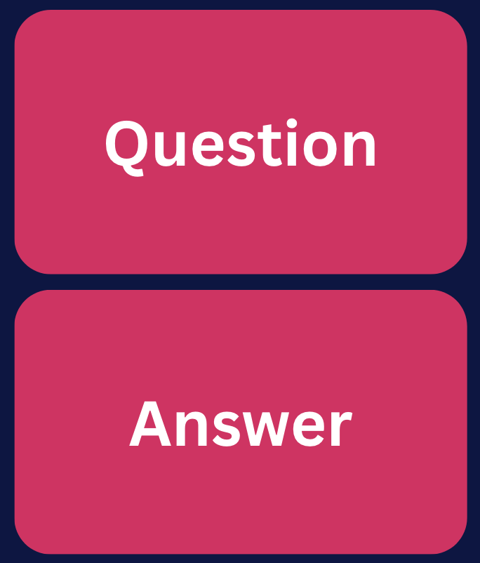

The Pomodoro Technique
The Pomodoro Technique is a time management method that uses 25-minute work sessions followed by short breaks to improve focus and productivity.
BENEFITS
- Enhances focus and concentration
- Reduces procrastination
- Encourages time-awareness
- Prevents burnout with regular breaks
DRAWBACKS
- May disrupt deep work sessions
- Not ideal for tasks requiring prolonged focus
- Frequent breaks may feel restrictive

Useful Tools
Active Recall
Active Recall is a study technique involving actively recalling information by testing yourself repeatedly.
Through flashcards, self-generated questions and practice tests, this study method helps your brain memorize, retain and retrieve information more efficiently.
BENEFITS
- Enhances cognitive aspects of learning
- Improves long-term Memory Retention
- Promotes efficient learning and focused attention
DRAWBACKS
- It can be time-consuming to create study materials
- It is possible to anticipate questions and answers, mimicking passive learning.
- Risk of studying facts in isolation without understanding their interconnections.
HOW IT WORKS
There are many different strategies of doing active recall. Select a method below:

BENEFITS
- Memorizing terms, concepts and short information.
- Writing your own flashcards can boost understanding and retention.
- Versatile and can be used for various subjects.
- Convenient for studying anywhere, anytime.
TOOLS
PRACTICE TESTING
Testing youself using past papers and mock exams is an excellent form of active recall.
BENEFITS
- Enhances exam preparedness
- Improved information memorisation, retnetion, and comprehension.
HOW TO
Search for Past Papers from your institution or online. Below are a few places to look for general subjects.
TOOLS
SELF TESTING
Creating your own questions to test yourself is a great way to remember material, and to prepare for potential exam questions.
BENEFITS
- Enhances exam preparedness
- Improved information memorisation, retnetion, and comprehension.
STUDY WITH OTHERS
Working with others is a great way to casually engage in active recall.
SQ3R
The Pomodoro Technique is a time management method that uses 25-minute work sessions followed by short breaks to improve focus and productivity.
Benefits
- Enhances focus and concentration
- Reduces procrastination
- Encourages time-awareness
- Prevents burnout with regular breaks
Drawbacks
- May disrupt deep work sessions
- Not ideal for tasks requiring prolonged focus
- Frequent breaks may feel restrictive
HOW IT WORKS